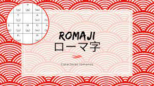
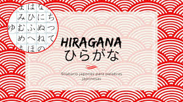

Romaji

Se refiere en grandes rasgos al alfabeto latino. En Occidente, se suele emplear este término para referirse a la escritura de la lengua japonesa en letras romanas o latinas en contraste con la mezcla habitual de kanji, hiragana y katakana. El curso tiene una duracion de 18 meses.
Hiragana

El hiragana se usa para escribir mayoritariamente todas las inflexiones y modificaciones de los verbos, adjetivos, adverbios y partículas. Por ejemplo, el verbo 'nomu' que significa 'beber' se escribe '飲む' combinando el kanji '飲' (se lee 'no') con el hiragana 'む' (mu). El curso tiene una duracion de 12 meses.
Katacana
El katakana (片仮名 o カタカナ) es uno de los dos silabarios empleados en la escritura japonesa, junto con el hiragana. Su invención se atribuye al monje Kūkai, o Kobo Daishi. También se suele usar el vocablo katakana para referirse a cualquiera de los caracteres de dicho silabario. El curso tiene una duracion de 12 meses.
Kanji
El kanji es uno de los tres sistemas de escritura japonesa, cuya funcionalidad es expresar conceptos, y para ello existen unas reglas generales. Además, a cada kanji le corresponde un significado. En este curso y de manera sencilla, aprenderás a identificar y escribir estos caracteres. El curso tiene una duracion de 18 meses.